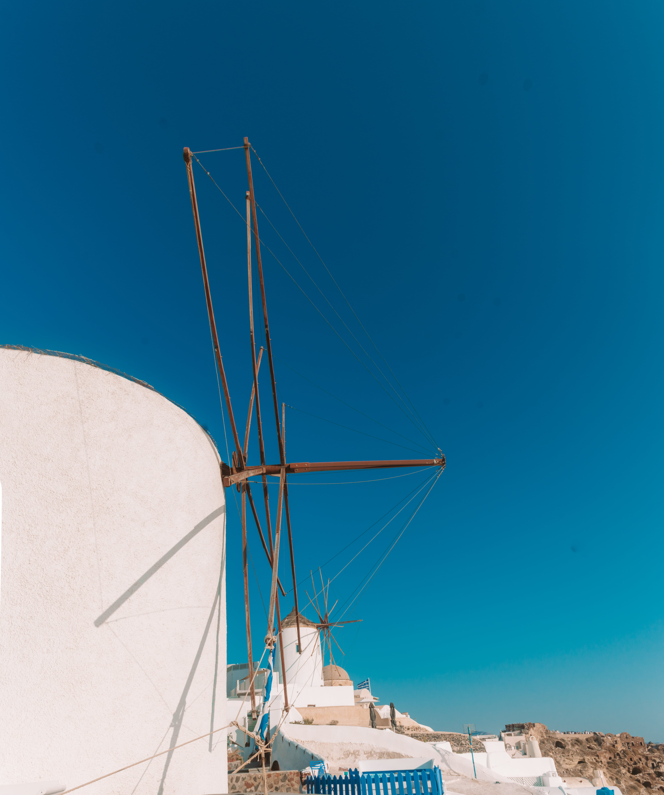

Santorini
Santorini, also known as Thira, is a Greek island located in the southern Aegean Sea. It is known for its white-washed buildings, stunning sunsets, and beautiful beaches with crystal clear waters. The island was formed through a volcanic eruption, leaving behind picturesque caldera cliffs.
Discover More...